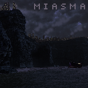
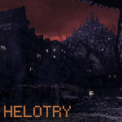
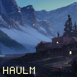
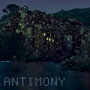
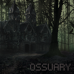
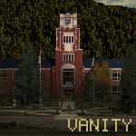

Neighborhood
The disordered society where the story takes place.
A hazy city located on the northwestern coast of Neighborhood. Towering smokestacks spew exhaust into the sky, scattered accross the landscape. The majority of the coast is composed of cliffs. Many elevators travel to the base of the cliffs where broad ports receive small and curious cargo ships. Down here the haze is minimal but hovers just meters above most lampposts.
A nightly town located on the coast of Neighborhood's southeastern peninsula. It's mountainside is plastered with homes glowing their tiny lights after sunsent. A place renown for it's seemingly limitless lawlessness. The line between friend or foe is unclear.
A remote and cold village located on the northeastern coast of Neighborhood. It's soft blankets of snow are more of a hindrance than they are enjoyable. The town itself is quiet and fairly unlike the rest of the island's populations. There is a higher sense of trust and civility. Watchposts adorn the mountainsides. They can be seen at night from their torch light.
A vast coastal city extending into cave systems within its great cliffsides located on the eastern coast of Neighborhood. Although it isn't as lawless as Helotry it still experiences a great deal of mischevous activity.
A great graveyard for the misfortunate located inland on the southwestern peninsula of Neighborhood. It has a bleak greenish atmostphere but manages to be littered with vibrant flowers. The overseers roam throughout the lands with their elongated necks and flash-light like eyes.
A regal town in the heart of Neighborhood. Neighborhood's command resides here. A small manor houses Neighborhood's rulers.